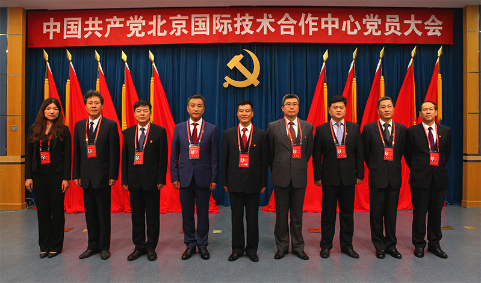

首页
首页
新领导集体 新创业征程
日期：2017-07-13
——国合中心新当选党委委员和纪委委员集体亮相

7月31日，中国共产党北京国际技术合作中心党员大会于民航学院会议厅隆重召开。会议严格按照法定程序组织所属全体党员对党委班子和纪委班子进行了换届选举，并投票选举产生了国合中心新一届党委班子和纪委班子。新当选的党委委员按姓氏笔画排序依次是：齐建华、吴荣胜、张庆伍、顾铁民、葛炜，新当选的纪委委员按姓氏笔画排序依次是：王玉来、叶温和（女）、李春来、邱江、张庆伍。
新当选的党委委员和纪委委员分别召开了一次全会，选举通过齐建华和顾铁民分别为新一届党委书记和副书记、张庆伍和李春来分别为新一届纪委书记和副书记。
选举工作结束后，齐建华作了重要讲话。齐建华指出：“此次党员大会明确了今后四年国合中心发展的指导思想、主业定位以及战略目标，新一届党委和纪委要全面履职尽责，同全体党员、广大干部职工一起，在国合中心向科技服务企业集团转型升级的‘三次创业’新征程上不懈努力奋斗！”齐建华同时向新当选的党委委员和纪委委员提出“全面从严律己”、“确保真抓实干”以及“坚决维护团结”的三点希望和要求。齐建华在讲话最后特别强调：“各位新当选的委员一定要以习近平总书记两次视察北京讲话精神和市十二次党代会精神为行动指针，在市国资委党委的坚强领导下，勤勉履职、善谋勇为，为开创国合中心新未来、建设全市一流的科技服务企业集团做出应有的贡献！”